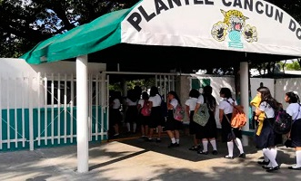

El Colegio de Bachilleres es una institución educativa del Gobierno de México que ofrece educación media superior a jóvenes en todo el país. El plantel Cancún Dos se encuentra en la ciudad de Cancún, Quintana Roo, y forma parte de esta red de escuelas preparatorias. El Colegio de Bachilleres fue fundado en 1973 por el Gobierno de México para ofrecer educación media superior a jóvenes de todo el país. En 1993, se abrió el plantel Cancún Dos para atender la creciente demanda de educación en el estado de Quintana Roo. Desde su fundación, el plantel Cancún Dos ha buscado ofrecer una educación de calidad a sus estudiantes, con un enfoque en el desarrollo de habilidades y conocimientos que les permitan enfrentar los desafíos del mundo moderno. Entre las áreas de especialización que se ofrecen en este plantel se encuentran ciencias sociales, humanidades y ciencias exactas. El plantel Cancún Dos del Colegio de Bachilleres ha logrado destacar a nivel local y nacional gracias a los logros de sus estudiantes y docentes. En diversas ocasiones, los alumnos de este plantel han obtenido reconocimientos en competencias académicas y científicas, demostrando la calidad de la educación que se ofrece en este plantel. En la actualidad, el plantel Cancún Dos sigue siendo uno de los centros educativos más importantes del estado de Quintana Roo, y sigue trabajando para ofrecer una educación de calidad a sus estudiantes y contribuir al desarrollo de la sociedad. 